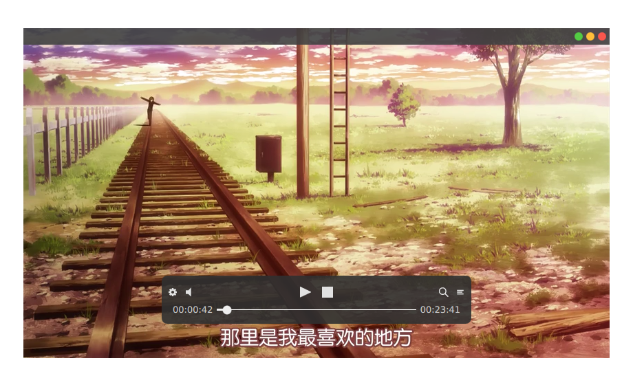
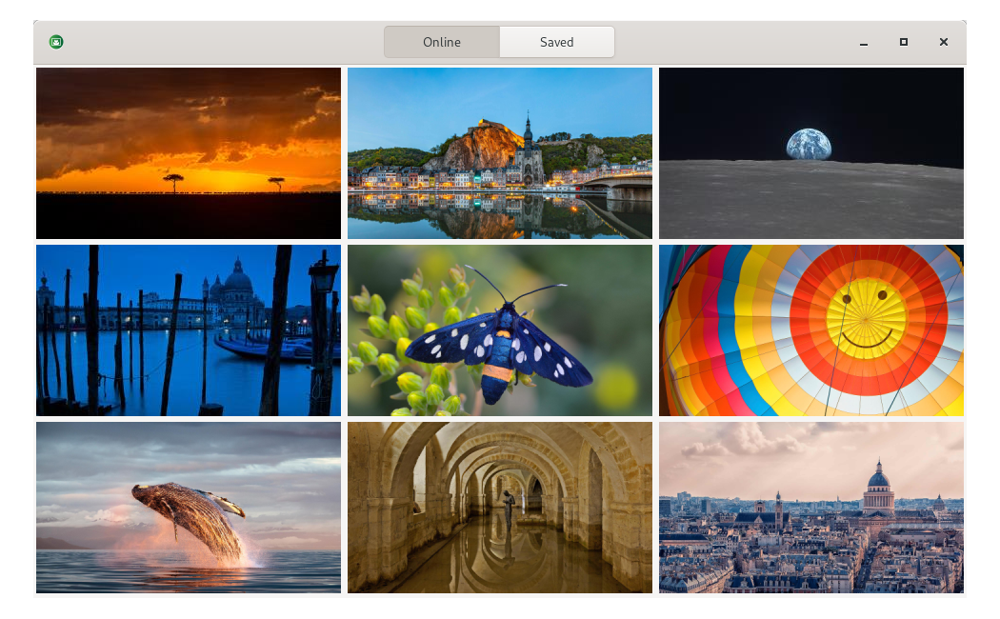

I'm a part-time App developer.
PROJECTS
Desktop Apps
Apps run on your Linux, Windows and macOS.


An elegant video player focusing on online videos.
- Beautiful and lightweight
- Play and download videos from Youtube, Bilibili etc.
Command line tools
Power your development.
3rd-party Debian repository that powers your Debian Linux.
- Make your software installation easier
- Safe, compatible with the official repository
- Automated package updates and builds
Deploy your Qt program for macOS.
- Extends the Qt's
macdeployqttool - Also deploys homebrewed libraries
Homebrew Taps for installing libmpv.
- Install libmpv with less dependencies